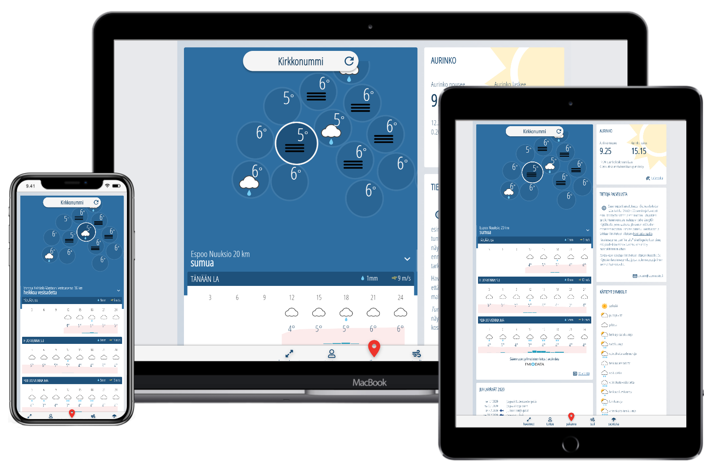
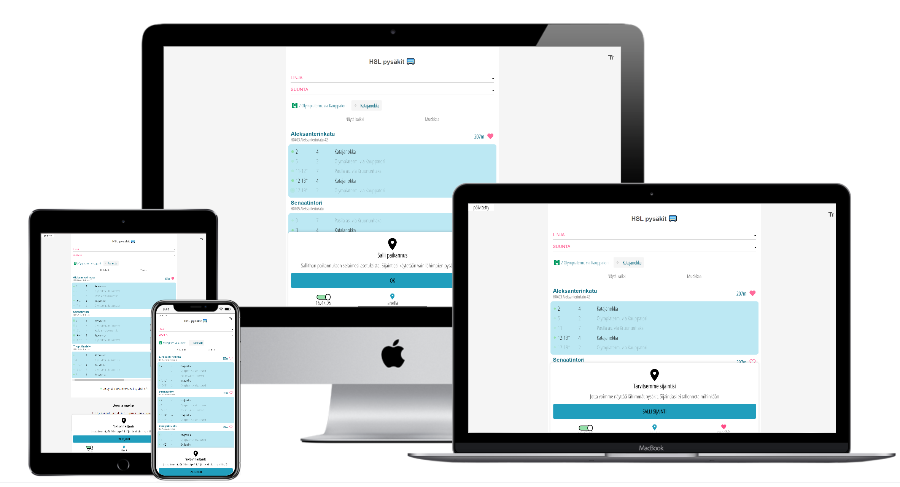

Video speed bookmarklet increases the playback speed when clicked and reverts the normal speed when clicked again.
video speed - bookmark by dragging the link into the browser toolbar
Using mobile device?
javascript:(function()%7B(() %3D> %7Bconst videos %3D document.querySelectorAll('video')%3Bfor( video of videos) %7Bconst speed %3D video.playbackRate %3D%3D%3D 1 %3F 12 %3A 1%3Bvideo.playbackRate %3D speed%3B%7D%7D)()%7D)()
copy bookmarklet code and paste it into existing bookmark

Weather forecast app - quickest way to check the current and upcoming weather.
See all the nearby observation stations and hourly forecast for three days at a glance.
Data is provided by Finnish Meteorological Institute (Ilmatieteen laitos)

Public transportation app - quickest way to check real time departure times from
your nearby public transportation stops. Using open data from HSL.